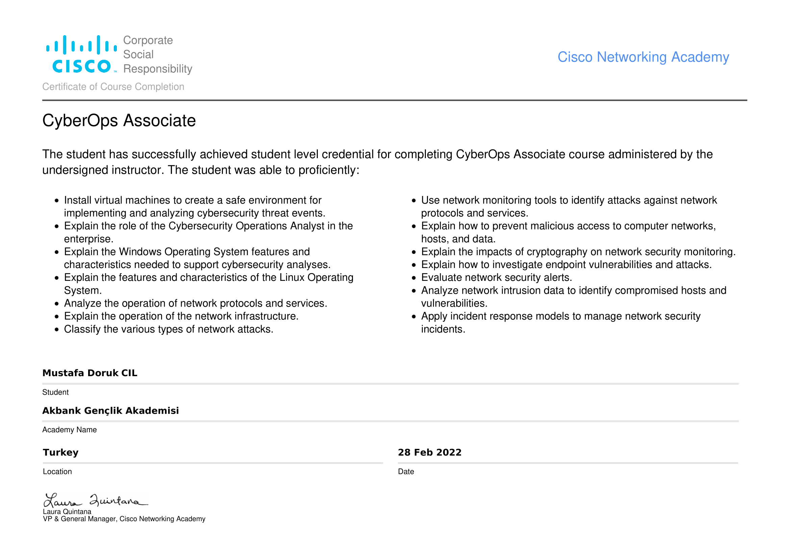
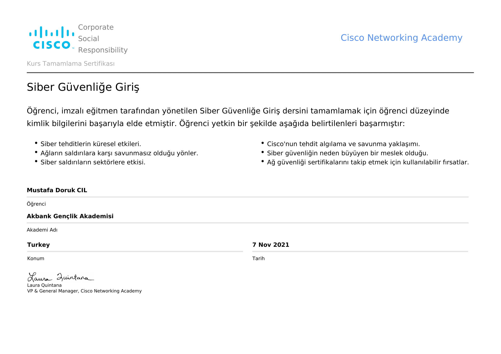

Mustafa Blog
Sertifikalar
IoT Security Bitirme Sertifikası

Sertifikayı detaylı incelemek ve indirmek için tıklayın.
CyberOps Associate Bitirme Sertifikası
Sertifikayı detaylı incelemek ve indirmek için tıklayın.
CCNA:Bilgisayar Ağlarına Giriş Bitirme Sertifikası

Sertifikayı detaylı incelemek ve indirmek için tıklayın.
Linux Unhatched Bitirme Sertifikası

Sertifikayı detaylı incelemek ve indirmek için tıklayın.
Siber Güvenliğe Giriş Bitirme Sertifikası
Sertifikayı detaylı incelemek ve indirmek için tıklayın.